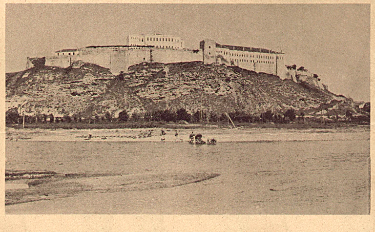
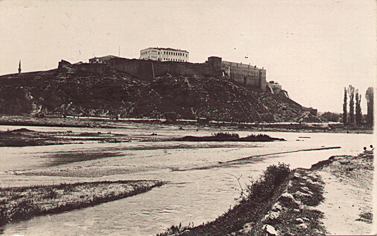
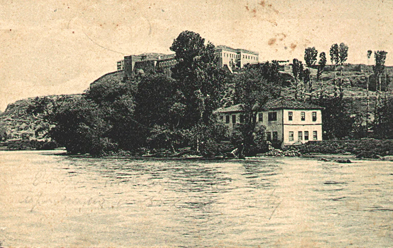
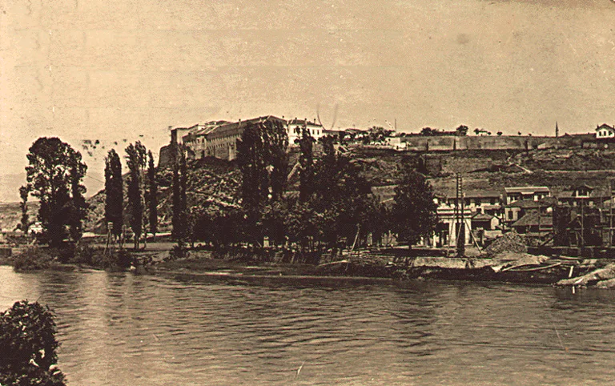
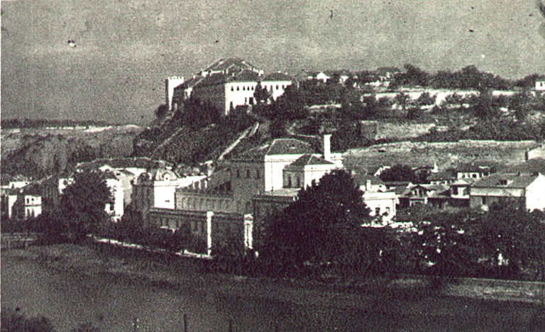
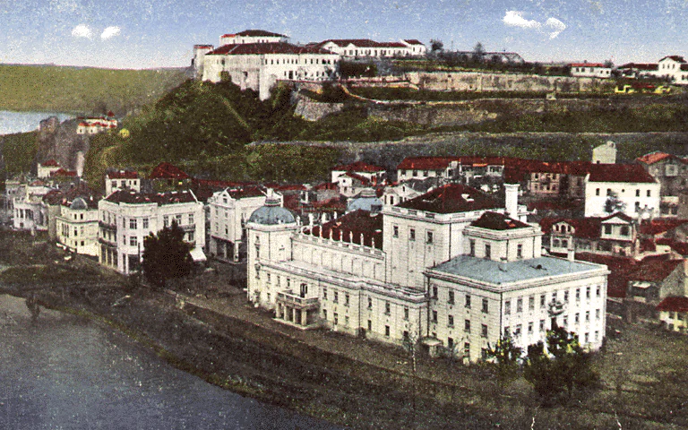
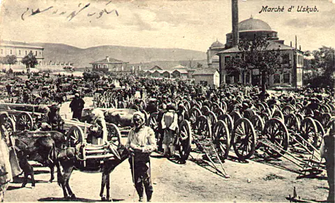

Kalaja
- Prodhimi
- UFUŽ dhe Dokumentar Filmi Pragë
- Skenari dhe regjia
- Slavko Janevski dhe EMAN CANERA
- Viti
- 1959
- Kohëzgjatja
- 00:10

Hyrja në Kalanë e Shkupit. (fillimi i shekullit XX)
Një nga vendet më dominuese në qendër të qytetit të Shkupit e zë Kalaja e Shkupit - Kale*. Gërmimet arkeologjike treguan se Kalaja ishte banuar që në kohët parahistorike - në neolit dhe në bronzin e hershëm. Në Kala jetohej për shkak të pozitës së saj të jashtëzakonshme strategjike. Studimi i ndërtimit ka vërtetuar se në themele u përdor material nga Scupi, i cili u shkatërrua pothuajse tërësisht në tërmetin katastrofik të vitit 518. Pas atij tërmeti qyteti u zhvendos në vendin e sotëm. U ndërtua një fortifikim që ndër shekuj u zgjerua dhe u forcua. Sot ka mbetur vetëm një pjesë e vogël e tij, e cila është restauruar dhe në mes të saj është bërë një shëtitore.
* (Kale në turqisht do të thotë kështjellë, dhe populli e mori fjalën si emër të shkurtër për kalanë e Shkupit)

Kalaja e Shkupit me një pjesë të mureve të saj.
- fillimi i shekullit XX

Kalaja e Shkupit - vitet 1910.

Kalaja e Shkupit - fotografuar nga ana e parkut të sotëm, fundi i shekullit XIX.

Kalaja e Shkupit - vitet 1910.

Kalaja e Shkupit - vitet 1910.

Kalaja e Shkupit. Fotografuar nga vendi i parkut të sotëm, vitet 1910.

Kalaja e Shkupit. Fotografuar nga vendi i parkut të sotëm, vitet 1910.

Pamje e Kalasë së Shkupit. Vitet 1920.

Pamje e Kalasë së Shkupit nga ana veriore.
- vitet 1910.

Fotografi e mrekullueshme e qytetit dhe rrjedhës së Vardarit. Majtas është Kalaja e Shkupit. Në qendër duken Shtëpia e Oficerëve dhe Banka Kombëtare. Djathtas është mali Vodno, dhe në largësi skajet e malit Kitka
.- fundi i viteve 1920.

Kalaja e Shkupit dhe kafeneja e vjetër "Boges", ku mblidheshin aktorët dhe mbaheshin shfaqjet e para teatrore - fillimi i shekullit XX.

Kalaja e Shkupit me kazermat - 1911. Poshtë kalasë duket kafeneja e vjetër "Boges".

Kalaja e Shkupit dhe kafeneja e vjetër "Boges"
- fundi i viteve 1910.

Fotografia është bërë nga Ura e Gurit, rreth vitit 1910. Majtas duket teatri i vjetër turk, dhe mbi të Kalaja e Shkupit.

Fotografia është bërë nga Ura e Gurit, rreth vitit 1910. Majtas duket teatri i vjetër turk, dhe mbi të Kalaja e Shkupit.

Kalaja e Shkupit dhe lagjja e vjetër hebreje nën të - fundi i viteve 1910.

Kalaja e Shkupit, me disa nga shtëpitë e lagjes hebreje në ndërtim - vitet 1920.

Kalaja e Shkupit, me disa nga shtëpitë e lagjes hebreje poshtë saj - vitet 1920.

Kalaja e Shkupit dhe shtëpitë e reja në lagjen hebreje - vitet 1920.

Kalaja e Shkupit me disa nga shtëpitë e lagjes hebreje - vitet 1920.

Kalaja e Shkupit dhe shtëpitë e reja në lagjen hebreje - vitet 1920.

Kalaja e Shkupit. Poshtë saj janë disa nga shtëpitë e lagjes hebreje - vitet 1920.

Kalaja e Shkupit dhe shtëpitë e reja në lagjen hebreje - vitet 1920.

Pamje e Kalasë së Shkupit nga njëra prej rrugëve të lagjes hebreje - vitet 1920.

Fotografi e bërë nga Shtëpia e Oficerëve - rreth vitit 1930. Pamje e mrekullueshme e Teatrit Kombëtar, urës së vogël prej druri dhe Kalasë së Shkupit.

Në plan të parë është Teatri Kombëtar, dhe mbi të ngrihet Kalaja e Shkupit - vitet 1930.

Fotografi e Kalasë së Shkupit, ku duken mirë pjesët përbërëse të fortifikimit. Poshtë kalasë duket Teatri Kombëtar me gjithë bukurinë e tij.
- vitet 1930.

Fotografi e Kalasë së Shkupit, ku duken mirë pjesët përbërëse të fortifikimit. Poshtë kalasë duket Teatri Kombëtar - vitet 1930.

Në plan të parë është Teatri Kombëtar, dhe mbi të ngrihet Kalaja e Shkupit - vitet 1950.

 Ujësjellësi4 kartolina
Ujësjellësi4 kartolina Kalaja30 kartolina
Kalaja30 kartolina Urat60 kartolina
Urat60 kartolina Kej58 kartolina
Kej58 kartolina Sheshi46 kartolina
Sheshi46 kartolina Ndërtesat66 kartolina
Ndërtesat66 kartolina Kishat e krishtera19 kartolina
Kishat e krishtera19 kartolina Objektet myslimane33 kartolina
Objektet myslimane33 kartolina Shtëpia e Oficerëve29 kartolina
Shtëpia e Oficerëve29 kartolina Teatri28 kartolina
Teatri28 kartolina Stacioni hekurudhor13 kartolina
Stacioni hekurudhor13 kartolina Shkollat36 kartolina
Shkollat36 kartolina Parqet12 kartolina
Parqet12 kartolina
Tregjet18 kartolina Rrugët38 kartolina
Rrugët38 kartolina Panorama I60 kartolina
Panorama I60 kartolina Panorama II30 kartolina
Panorama II30 kartolina Kolazhe55 kartolina
Kolazhe55 kartolina Përmbytjet9 kartolina
Përmbytjet9 kartolina Tërmeti27 kartolina
Tërmeti27 kartolina Shkupi 200026 kartolina
Shkupi 200026 kartolina